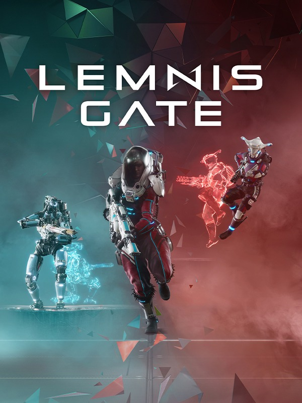

Lemnis Gate
Lemnis Gate
Details
|  | |
| Playtime | Not Played |
| Last Activity | Never |
| Added | 12/17/2021 11:58:03 |
| Modified | 12/17/2021 11:58:28 |
| Completion Status | Not Played |
| Library | Steam |
| Source | Steam |
| Platform | PC (Windows) |
| Release Date | 9/28/2021 |
| Community Score | |
| Critic Score | 84 |
| User Score | |
| Genre | Action Indie Strategy |
| Developer | Ratloop Games Canada |
| Publisher | Frontier Foundry |
| Feature | Multiplayer |
| Links | PCGamingWiki Official site IsThereAnyDeal ProtonDB SteamDB MobyGames |
| Tag | |
Description
Lemnis Gate is a time-warping, turn-based, multiplayer combat strategy FPS. Over five alternating turns taking place in a 25” time-loop, you are called to master the unique abilities of a varied cast of deep-space operatives and outskill, outsmart, and outmanoeuvre your opponent in mind-bending, four-dimensional battles.


KEY FEATURES
THINK DIFFERENTLY
Matches in Lemnis Gate take place within time loops. You have 25 seconds to execute your action, be it blasting an enemy, manoeuvring your operative, or setting up your next move. After all players have taken turns, the next 25-second round begins. Now you’ll face what has happened while setting up what will happen. Each of the five rounds is your chance to alter the timeline as past, present, and future converge.A TIME-BENDING TACTICAL SHOOTER
With a varied cast of characters to choose from, how you play is up to you. Lay damaging toxic waste in your enemy’s path, slow time to land the perfect shot, or deploy protective orbs to assist your future self. Every operative possesses a distinctive loadout and special ability that proves decisive on the battlefield.TEAM UP WITH YOURSELF
Welcome to the team comprised entirely of one: you. With Lemnis Gate’s innovative auto co-op feature, you command every member of your side. Auto co-op gives you total control of five deep-space operatives, effectively enabling two competitors to duke it out in bustling ten-character matches. Become a literal one-person army.COUNTLESS POSSIBILITIES, ENDLESS OUTCOMES
From the first second to the last, anything can happen in Lemnis Gate. Each round is a fresh chance to implement an unbeatable new strategy – or earn redemption from an earlier error. Predict hostiles’ routes, infiltrate enemy lines, and develop multi-layered gameplans by co-operating with yourself. Experiment both in and outside time, and get creative with causality.